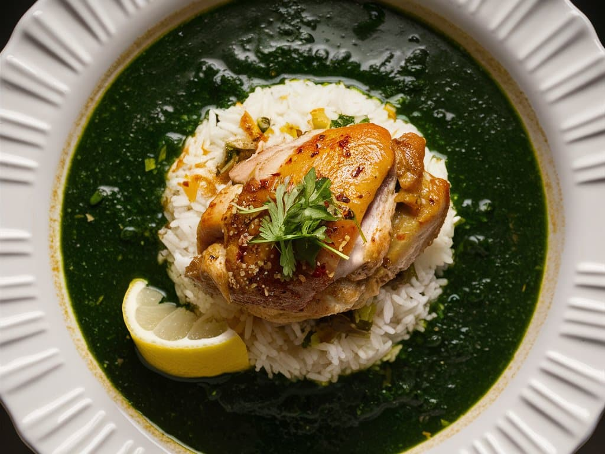

Spices
Berbere leaves the Ethiopian kitchen
Home cooks around the world are adding berbere to roasts, soups and even popcorn.
Read more →African food is on the rise
Chefs, farmers and food entrepreneurs across the continent are bringing ingredients like cassava, fonio and leafy greens to a global audience. Start your journey with three signature dishes: Ethiopian doro wat, Egyptian molokhia and Ghanaian banku.
Featured dishes

East Africa · Ethiopia
A slow-cooked chicken stew rich with berbere and spiced butter, served on injera.
View recipe →
North Africa · Egypt
A silky green soup of jute leaves, finished with garlic and coriander fried in ghee.
View recipe →
West Africa · Ghana
Smooth fermented corn and cassava dough with grilled tilapia and fresh pepper sauce.
View recipe →Explore by region
Latest food trends
Spices
Home cooks around the world are adding berbere to roasts, soups and even popcorn.
Read more →Greens
Dishes like molokhia show how jute leaves and other greens can be the star of a meal.
Read more →Fermentation
From fermented corn dough for banku to teff batter for injera, sour flavors are back in fashion.
Read more →